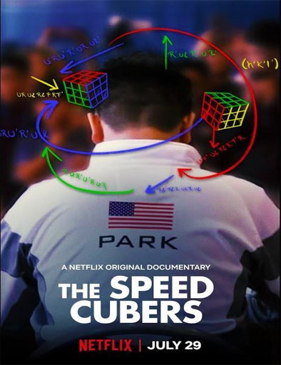

Mucho se habla de quién es la persona que más rápido resuelve el Cubo de Rubik en el mundo, pero, ¿Quién es realmente el mejor SpeedCubers del mundo?. The Speed Cubers es un documental de 2020 sobre la vida de los campeones de speedcubing Max Park y Feliks Zemdegs dirigido por Sue Kim.
|  |